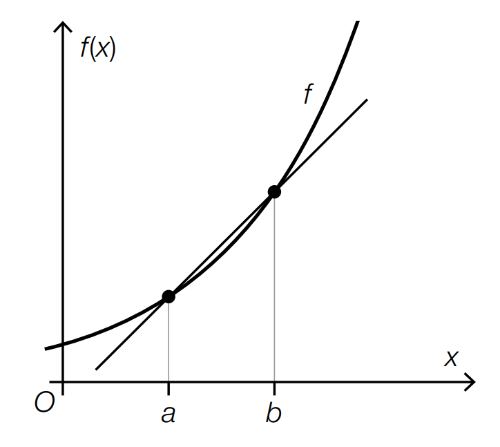

In der nachstehenden Abbildung sind der Graph der differenzierbaren Funktion \( f \) sowie die
Sekante durch die Punkte \( (a\,|\,f(a)) \) und \( (b\,|\,f(b)) \) dargestellt.

Aufgabenstellung:
Ergänzen Sie die Textlücken im nachstehenden Satz durch Ankreuzen des jeweils zutreffenden Satzteils so, dass eine richtige Aussage entsteht.
Der Ausdruck \( \displaystyle \lim_{a \to b} \frac{f(b) - f(a)}{b - a} \) ist
①
und entspricht der
②.